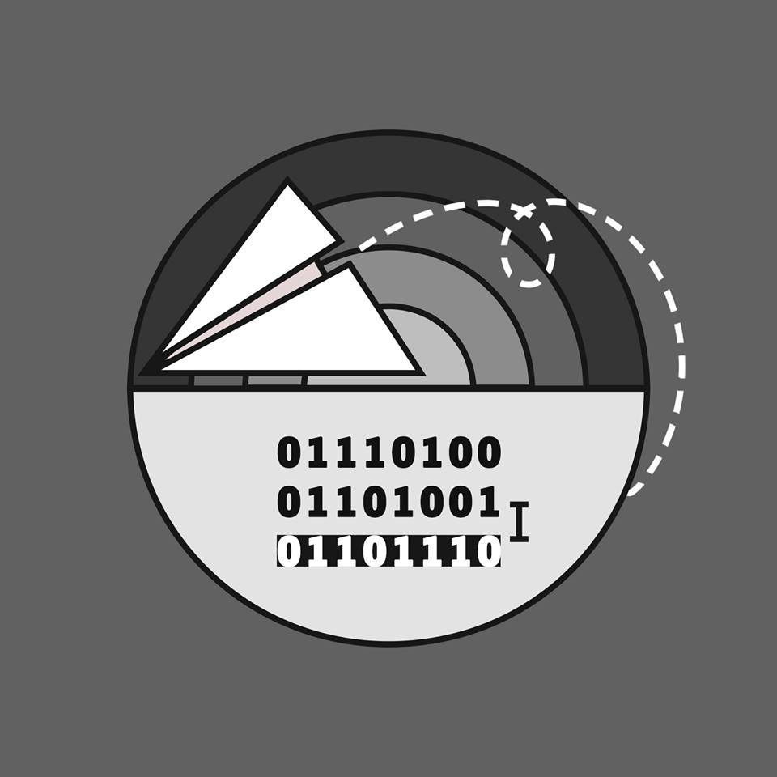

CSP
CẦN CÙ BÙ SIÊNG NĂNG
1D/1D optimization
Phương pháp tối ưu qhđ có dạng:
$$f(x) = {min}↙{i=0}↖{x-1} f(i) + w(i, x)$$
Công thức khá quen thuộc với mọi người. Tuy nhiên, khi thoả mãn 1 số điều kiện, ta có thể giải bài toán
trong $O(n.log_n)$
$$ ∀i ⩽ j, w(i, j) + w(i + 1, j + 1) ⩽ w(i + 1, j) + w(i, j + 1) $$
Hay còn gọi là bất đẳng thức tứ giác.
$$k(x) = arg {min}↙{i=0}↖{x-1} f(i) + w(i, x)$$
$$∀i ⩽ j, k(i) ⩽ k(j) $$
Giả sử bất đẳng thức tứ giác được thoả mãn (ta có thể viết thử mấy giá trị của w).
Cách đơn giản nhất ta nghĩ đến để tối ưu f(x) là ta for từ k(x - 1) thay vì 1. Tuy nhiên, việc này chỉ làm
giảm số hằng số, không làm giảm thời gian thực hiện thuật toán.
Ta vẫn luôn nghĩ "với mỗi x, k(x) là bao nhiêu?" Nhưng giờ hãy nghĩ "với mỗi i, những giá trị x nào cho ta
k(x) = i?"
Ban đầu, chưa có thông tin gì nên mọi x đều có k(x) = 1.
k = 1111111111111111111111111111111111111111111
Sau khi ta tính f(2), chúng ta có thể duyệt lại các x, cập nhật lại k(x) xem 2 tốt hơn hay 1 tốt hơn. Nhưng
lưu ý dãy k sẽ có dạng
k = 1111111111111111222222222222222222222222222
Điều này có nghĩa là ta có thể chặt nhị phân điểm nhỏ nhất có k(x) = i. Sau đó ta tính giá trị f(3) và cập nhật
lại dãy k. Khi đó dãy k sẽ có 1 trong 2 dạng sau:
k = 1111111111133333333333333333333333333333333
k = 1111111111111111222222222223333333333333333
Do đó các việc cần làm khi cập nhật k với f(3) là:
• Kiểm tra xem giá trị x đầu tiên mà k(x) = 2 thay bằng 3 có tốt hơn không
• Nếu nó tốt hơn, chặt nhị phân trong vùng k(x) = 1, tìm điểm x đầu tiên sao cho k(x) = 3 tốt hơn k(x) = 1.
• Nếu không, chặt nhị phân vùng k(x) = 2.
Ta có thể tóm tắt thuật toán như sau. Ta dùng 1 vector để lưu lại giá trị x đầu tiên của mỗi đoạn sao cho k(x) ≠
k(x - 1). Sau khi ta tính giá trị f(i) ta cập nhật lại vector:
• Nếu giá trị i mới tốt hơn vector.back thì vector.pop_back
• Nếu không ta chặt nhị phân trong đoạn hiện tại tìm điểm nhỏ nhất có k(x) = i. Sau đó thêm đoạn mới vào vector
Mỗi giá trị i chỉ được push & pop một lần nên độ phức tạp của cấu trúc dữ liệu này là $O(n)$. Tuy nhiên ta còn thao
tác chặt nhị phân nên tổng độ phức tạp là $O(n.log_n)$